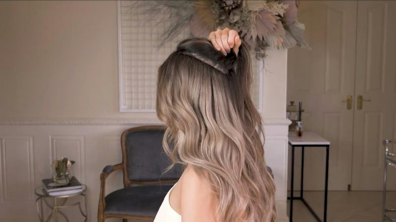
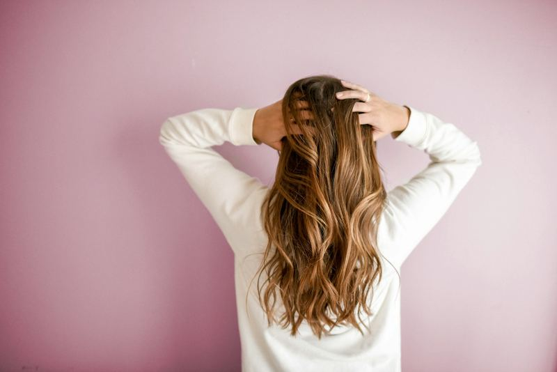
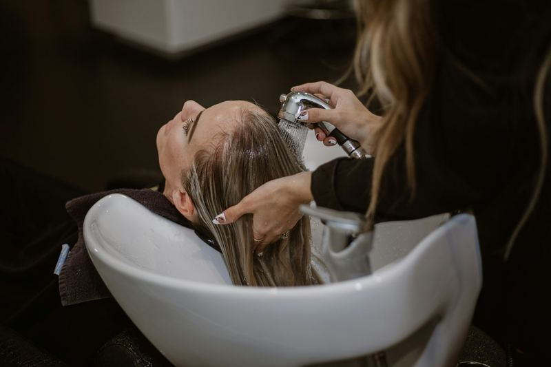

Barvení a melír
Celá barva, melír, ombré i balayage s přípravky L'Oréal Professionnel.

Celá barva, melír, ombré i balayage s přípravky L'Oréal Professionnel.

Účes na ples, svatbu nebo maturitu. Vyzkoušíme ho předem.

Střih podle tvaru obličeje, péče o vlasy i vlasovou pokožku.
„Vřele doporučuji.“
zákazník na Firmy.cz
„Super, užil jsem si to.“
zákazník na Firmy.cz